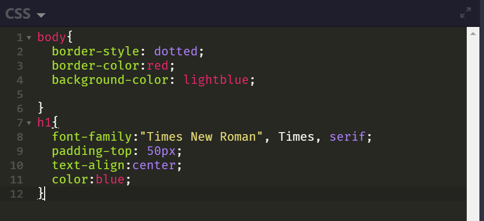
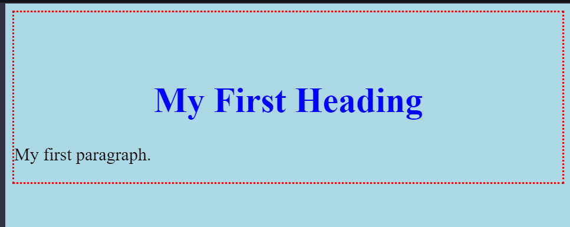

Sample HTML file
Sample Css file
When we embedded the css file to the html file,the outcome of this is:(See the figure below)
Version History
- CSS LEVEL 1
- The first CSS specification to bcome an official W3C Recommendation is CSS Level 1.
- Published on December 1996 and first CSS specification to become an official W3C Recommendation
- Among its capabilities are support for
- Font Poperties such s typeface and emphasis
- Color of text,backgrounds
- Text attributes such as spacing between words and letters
- Alignment of text,imagestables
- Margin,border,padding
- generic classification of group of elements
- CSS LEVEL2
- supports media-sepcific style sheets(visual browsers,url devices,printers,braile devices)
- Published on May 1998
- This level supports the ;
- Box Model
- Selectors
- Media Types
- Visual Effects
- Generated Content
- Tables
- Page Media
- CSS LEVEL 2.1
- Publised on June 2011 and derived from and is intended to replaces the CSS2 specification.
- CSS LEVEL 3
- Modular aproach to as development opposed to the momololithic
- It the current version
- CSS3 includes the support of:
- Paged Media
- MathMl
- Generated Content
- Color L3
- Name spaces
- Selectors L3
- Media queries
- Style Attributes
- Masking and Basic UI
- Transition
- Multi colums